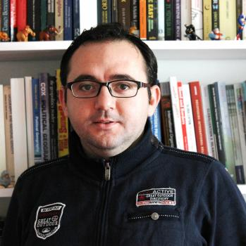

Kadromuz
Yrd. Doç. Dr. İsmail Numan Telci

Ismail Numan Telci is the Deputy Director of the Middle East Institute (ORMER) and an Assistant Professor at the Department of International Relations at Sakarya University. He also works as a researcher at the Foreign Policy Department at SETA Foundation. His research focuses on Egyptian politics, Arab revolutions and politics in the Gulf region. Ismail Numan Telci was a visiting researcher at the Center for Civilizations and Dialogue of Cultures at Cairo University from November 2012 to August 2013. He is the author of Dictionary of the Egyptian Revolution and editor of Turkish Journal of Middle Eastern Studies. Telci is the managing editor of www.misirbulteni.com, a news webpage focusing on the recent developments in Egypt.
Asst. Prof. Dept. of International Relations, Sakarya University
Deputy Director, Middle East Institute, Sakarya University
Education:
BA: Political Science, Istanbul University, Turkey (2006)
MA: European Studies, Hochschule Bremen, Germany (2008)
PhD: International Relations, Sakarya University, Turkey (2015)
Dissertation Title: The Role of Domestic and External Actors in the Egyptian Revolution and Counter-Revolution: 2011-2015
Research Areas: Egyptian politics and society, Arab revolutions and Revolution theories, Gulf countries and regional politics, Turkish foreign policy toward the Middle East.
Editor: Turkish Journal of Middle Eastern Studies & Middle East Yearbook
Editor: www.misirbulteni.com (Daily news bulletin on Egyptian politics)
PUBLICATIONS
Books:
- Dictionary of the Egyptian Revolution, İstanbul: Açılım Kitap, Ocak 2014, 352 syf. (Turkish)
- Middle East Yearbook 2010, (with Kemal İnat ve Muhittin Ataman), İstanbul: Açılım Kitap, Ekim 2011, 536 syf. (Turkish)
Book Chapters:
- "Turkey's Egypt Policy", Turkish Foreign Policy Yearbook 2016, (ed) B. Duran, K. İnat ve M. Caner, Ankara: Seta Yayınları, June 2016, p. 223-246. (Turkish)
- "Turkey's Egypt Policy", Turkish Foreign Policy Yearbook 2015, (ed) B. Duran ve K. İnat, Ankara: Seta Yayınları, May 2016, p. 195-218. (Turkish)
- "Egypt", Middle East Yearbook 2015, (eds.) K. İnat ve M. Ataman, İstanbul: Açılım Kitap, April 2016, p. 169-192. (Turkish)
- "Soft Power and Think Tanks: The Case of Turkey", Turkish Foreign Policy and Public Diplomacy, (ed) M. Şahin ve B. S. Çevik, Ankara: Nobel Akademik Yayıncılık, September 2015, p. 519-550.
- "Turkey's Egypt Policy", Turkish Foreign Policy Yearbook 2014, (ed) B. Duran, K. İnat ve A. Balcı, Ankara: Seta Yayınları, April 2015, p. 207-230. (Turkish)
- "Turkey's Egypt Policy", Turkish Foreign Policy Yearbook 2013, (ed) B. Duran, K. İnat ve A. Balcı, Ankara: Seta Yayınları, January 2015, p. 187-208. (Turkish)
- "Egypt", Middle East Yearbook 2014, (eds.) K. İnat ve M. Ataman, İstanbul: Açılım Kitap, December 2013, p. 139-166. (Turkish)
- "Egypt", Middle East Yearbook 2013, (eds.) K. İnat ve M. Ataman, İstanbul: Açılım Kitap, December 2013, p. 163-192. (Turkish)
- "Turkey's Egypt Policy", Turkish Foreign Policy Yearbook 2012, (ed) B. Duran, K. İnat ve U. Ulutaş, Ankara: Seta Yayınları, December 2013, p. 159-182.
- "Egypt", Middle East Yearbook 2012, (eds.) K. İnat ve M. Ataman, İstanbul: Açılım Kitap, December 2013, p. 183-216. (Turkish)
- "Egypt", Middle East Yearbook 2011, (eds.) K. İnat, M. Ataman, F. Aydın, B. Yıldırım, İstanbul: Açılım Kitap, December 2012, p. 213-256. (Turkish)
- "Religion in Turkmenistan", Markus Porsche-Ludwig ve Jürgen Bellers (Eds.), Handbuch der Religionen der Welt, Nordhausen: Bautz Verlag, 2012.
- "Turkey's Iran, Israel/Palestine and Syria Policy", with Kemal Inat ile, Turkish Foreign Policy Yearbook 2011, (eds) K. İnat, B. Duran and A. R. Usul, Ankara: Seta Yayınları, November 2012, p. 205-265. (Turkish)
- "Egypt", Middle East Yearbook 2010, (eds.) K. İnat, M. Ataman ve İ. N. Telci, İstanbul: Açılım Kitap, December 2011, s. 223-253. (Turkish)
- "Turkey's Iran, Israel/Palestine and Syria Policy", with Kemal Inat ile, Turkish Foreign Policy Yearbook 2010, (eds) K. İnat, B. Duran and M. Ataman, Ankara: Seta Yayınları, October 2011. (Turkish)
- "Turkey's Iran, Israel/Palestine and Syria Policy", with Kemal Inat ile, Turkish Foreign Policy Yearbook 2009, (eds) K. İnat, B. Duran and M. Ozcan, Ankara: Seta Yayınları, March 2011. (Turkish)
- "Egypt", Middle East Yearbook 2009, (eds.) K. İnat, M. Ataman and C. Çakmak, Istanbul: Küre Yayınları, February 2011. (Turkish)
- 'Democratization of Pakistan: A Role for the European Union', in "Indien und Pakistan – Atommächte im Spannungsfeld regionaler und globaler Veränderungen Beiträge zur Außen – und Sicherheitspolitik Südasiens", (eds) Sebastian Buciak and Rudiger von Dehn, Berlin: Köster-Verlag, pp.513-526, December 2010. http://www.suedasien.sicherheitspolitik.org/
- "Egypt", Middle East Yearbook 2008, (eds.) K. İnat and M. Ataman, Istanbul: Küre Yayınları, January 2010. (Turkish)
Articles in Refereed Journals:
- "The Role of Labour Movement During the Egyptian Revolution", Turkish Journal of Middle Eastern Studies, Vol: 1, No:1, May 2014, pp. 81-112.
- "From Revolution to Coup: Military Tutelage in Egypt", (with Nebi Miş), Middle East Yearbook (Ortadogu Analiz), August 2013, Vol: 5, No: 56, pp. 20-29.
- "Local Modern Challenge to Global Postmodern Architecture: TOKI's International Mass Housing Projects", Liberal Thinking, Year: 18, No: 71, Summer 2013, pp. 219-227.
- "Bitter "Revolution": Political and Economic Crisis in Egypt", Middle East Analysis (Ortadogu Analiz), July 2013, Vol: 5, No: 55, pp. 49-57.
- "The Arab Spring Not Reaching Jordan: The Arab Awakening and Jordan", Middle East Analysis (Ortadogu Analiz), February 2013, Vol: 5, No: 50, pp. 61-69.
- "Power Struggle in Post-Revolution Egypt: Islamist Government vs. Secular Opposition", Middle East Analysis (Ortadogu Analiz), January 2013, Volume: 5, No: 49, pp. 79-89.
- "Positions of Social Actors in the Egyptian Revolution: A Micro Level Analysis", Journal of Academic Inquiries, Volume: 6, Number: 2, Year: 2011, pp. 171-201.
- "6 April Movement: Towards a New Social Activism?", Middle East Analysis (Ortadogu Analiz), April 2011, Issue:3, Number: 28, pp. 98-106.
Book Reviews:
- Brian K. Grodsky, Social Movements and the New State: The Fate of Pro-Democracy Organizations When Democracy is Won, Europe-Asia Studies, Vol. 66, Issue: 9, October 2014, s. 1583-1584.
- Hazem Kandil, Soldiers, Spies and Statesmen: Egypt's Road to Revolt, Middle Eastern Studies (Ortadoğu Etütleri), Volume 6, No 1, July 2014, pp.137-141.
- Jason Bahbak Mohaghegh, The Writing of Violence in the Middle East: Inflictions, Journal of Islamic Studies, Vol. 25, Issue 1, January 2014, pp.81-83.
- Ayse Zarakol, After Defeat: How the East Learned to Live with the West, Europe-Asia Studies, Vol. 65, Issue 7, September 2013, pp. 1490-1491.
- Stig Jarle Hansen, Atle Mesoy and Tuncay Kardas (eds.), The Borders of Islam: Exploring Samuel Huntingtons's Faultlines, from Al-Andalus to the Virtual Ummah, Insight Turkey, Vol. 13, No.2, 2011, pp. 186-188.
Report- Analysis – Comments:
- "Middle Eastern supporters of Turkey's failed coup", Al Jazeera English, 14 July 2017.
- "Qatar-Gulf Rift: Can Riyadh Be Triumphant?", Al Jazeera English, 9 July 2017.
- "The July 15 Coup Attempt and the Western Media", I. N. Telci, İ. Efe, T. Kardaş ve İ. Çağlar (eds), SETA (Foundation for Political, Economic and Social Research), Report, July 2017, 104 p. (Turkish)
- "Sisi and the Future of the Egyptian Revolution", TRT World, 25 January 2017.
- "Sisi's Gamble: How Egypt's Turn Toward Iran Changes Power in the Region", Middle East Eye, 11 November 2016.
- "Roots of Radicalization in Egypt", Radicalism in the Middle East: Overview and Sources, Report, IRCICA, 1 August - 30 October 2016. (Turkish)
- "Future of the Egyptian Revolution", SETA (Foundation for Political, Economic and Social Research), Analysis, No: 149, January 2016, 24 p. (Turkish)
- "Overcoming the Regional Stalemate: Understanding the Politics of the Gulf States and Turkey during the Egyptian Coup, Project on Middle East and Arab Spring, Policy Brief, No: 8, April 2015.
- "Why is Algeria important for Turkey?", Al Jazeera English, 31 May 2014.
- "The New Constitution and Egyptian Politics After the Military Coup", SETA (Foundation for Political, Economic and Social Research), Analysis, No: 86, March 2014, 26 p.
- "Turkish Foreign Policy under Regional Transformations", (with Murat Yeşiltaş), Al Jazeera Center for Studies, 15 December 2013.
- "The Illusion of a Revolution in Turkey: Tahrir or Taksim?", Al Jazeera Center for Studies, 10 June 2013.
International Paper Presentations:
- Ismail Numan Telci, "Turkey-North Africa: Prospects for Cooperation and Perspectives for the Future", Turkey-North Africa Relations: Challenges and Opportunities Conference, Center for Strategic and Diplomatic Studies, 22-25 November, Tunis, Tunisia.
- Ismail Numan Telci, "Politics in Exile: Internationalization of Muslim Brotherhood during the Counter-Revolution in Egypt", British Association for Islamic Studies Annual Conference, University of London, 11-12 April 2016, London, UK.
- Ismail Numan Telci, "Overcoming the "Militaristic State" in Egypt: Reflections from Turkish Experience", The 9th Al Jazeera Forum: Conflict and Change in the Arab World, Al Jazeera, 4-6 May 2015, Doha, Qatar.
- İsmail Numan Telci & Nebi Mis, "The New Middle East and Construction of a Geographical Space: A Critical Geopolitics Approach", The Middle East in Global Perspective: Interactions Across Time and Space, British Society for Middle Eastern Studies, 16-18 June 2014, University of Sussex, Brighton, UK.
- Ismail Numan Telci & Nebi Mis, "Ideological Stances in Turkey in Defining the Changes in the Arab World", New Media, New Politics? (post-) Revolutions in Theory and Practice Conference, Westminster University, 26 April 2013, London, UK.
- Ismail Numan Telci & Nebi Mis, "Societal Security Dilemma: Remanufacturing of Collective Memory through Secular Anti-Secular (Alevi – Sunni) Contention", Intra-societal Security Dilemma in Turkey Workshop, Manchester University, 10 July 2012, Manchester, UK.
- Ismail Numan Telci, "The Anatomy of a Postmodern Revolution: Egypt 2011", Arab-Turkish Congress of Social Sciences, 17-19 March 2012, Cairo University, Egypt.
- Ismail Numan Telci & Ali Balcı, "Securitization and Foreign Policy: Cyprus between the Coup Plotters and the JDP", Third Global International Studies Conference on World Crisis: Revolution or Evolution in the International Community?, 17-20 August 2011, University of Porto, Portugal.
- Ismail Numan Telci, "The Effect of Media on Turkish-Syrian Relations: Before and After the Syrian Uprising", Turkish-Syrian Relations Conference, 7-9 July 2011, Centre for Syrian Studies, University of St. Andrews, United Kingdom.
- Ismail Numan Telci & Nebi Miş, "Facilitation as a Tool in Foreign Policy? The Case of Turkey's Role in Conflicts in the Middle East", World Congress for Middle Eastern Studies, 19-24 July 2010, University of Barcelona, Spain.